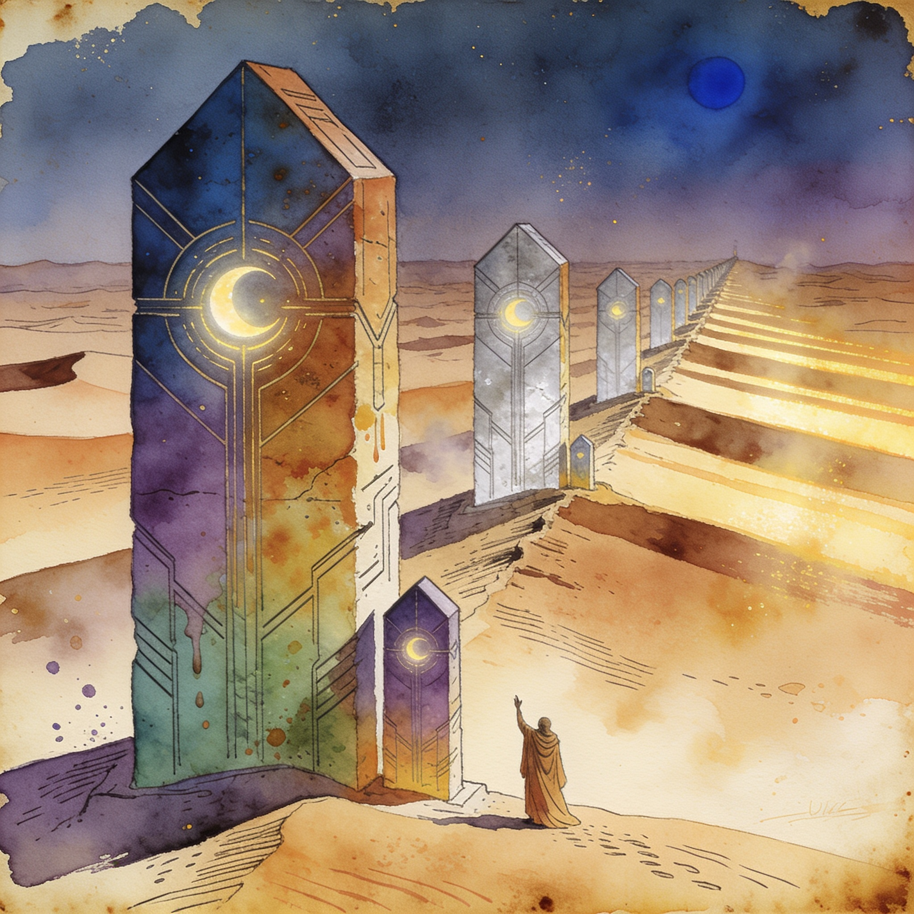

Spark chips, deepened
NVIDIA and MediaTek pledge multiple generations of RTX Spark and DGX Spark PC chips
NVIDIA and MediaTek are expanding their partnership to build several future generations of RTX Spark and DGX Spark PC chips, pairing NVIDIA GPUs (including Vera Rubin and upcoming Feynman architectures) with MediaTek SoCs for consumer PCs and workstations. MediaTek also adopts NVIDIA's NVLink Fusion for custom AI infrastructure. A multi-generation commitment to affordable, local AI hardware.